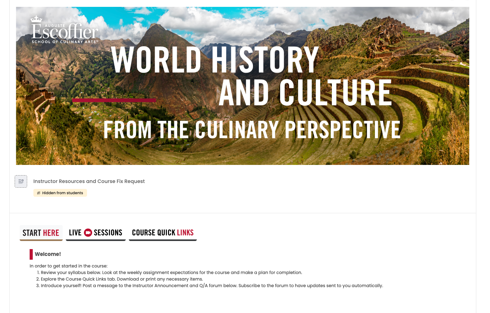

Learning Technology
Moodle Modernization
Led instructional design planning and faculty support initiatives during a major LMS modernization effort, helping improve usability, readiness, scalability, and the overall digital learning experience.
View Case Study